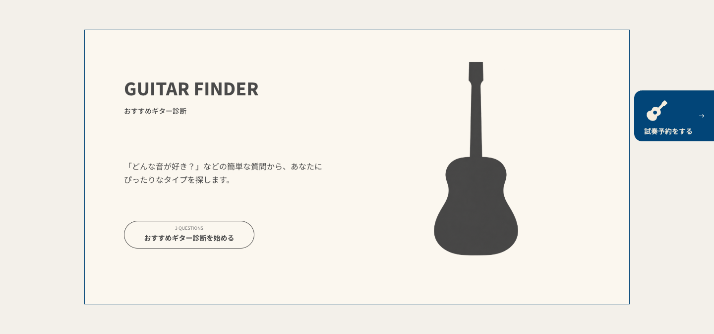
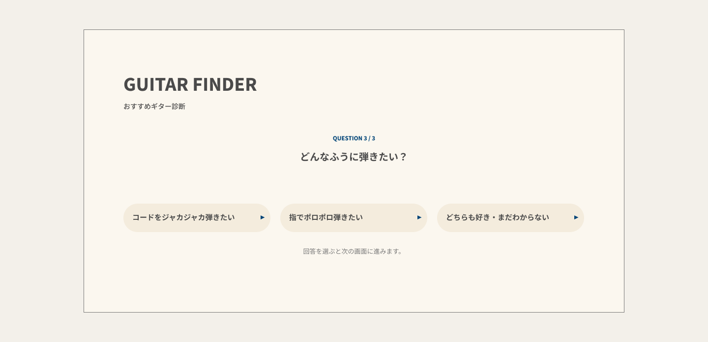
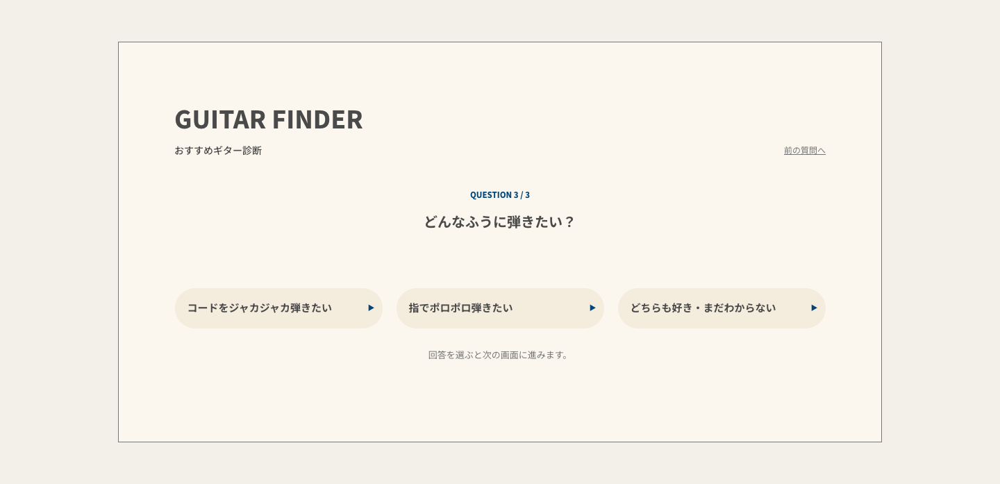
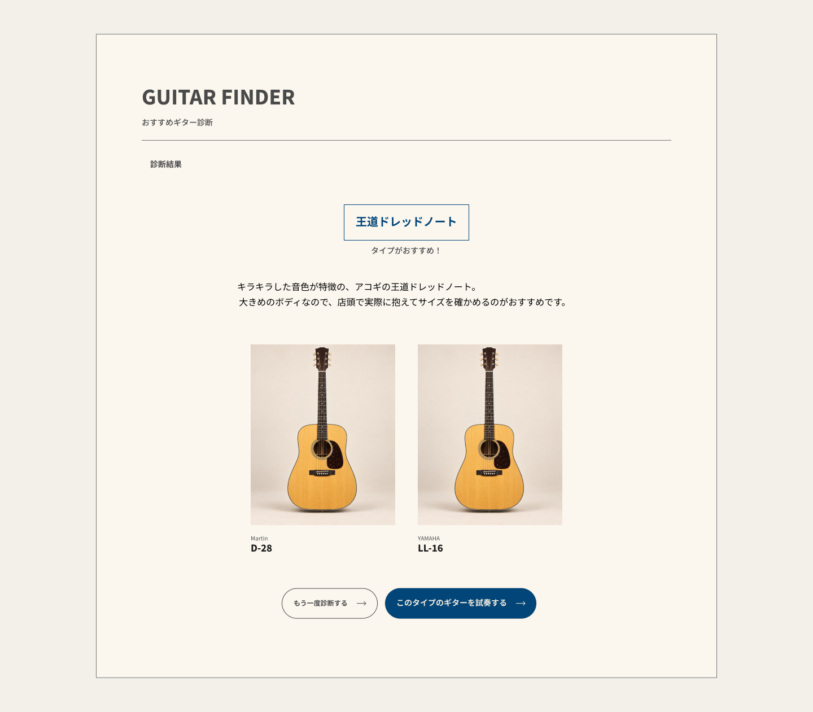
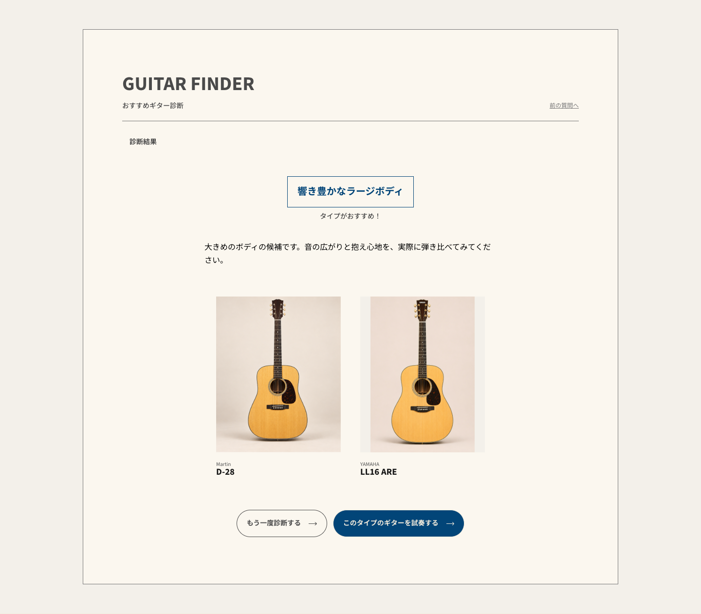
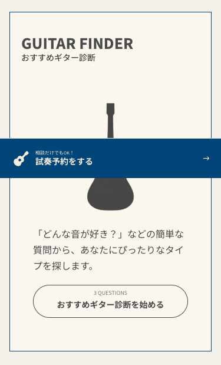
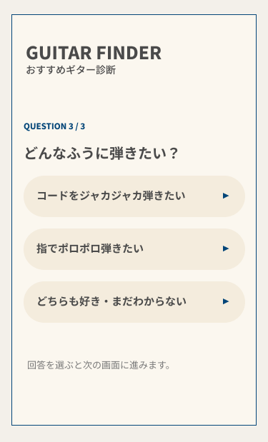
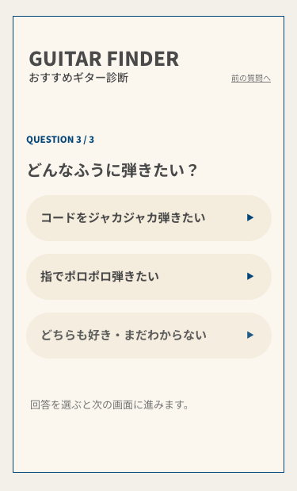
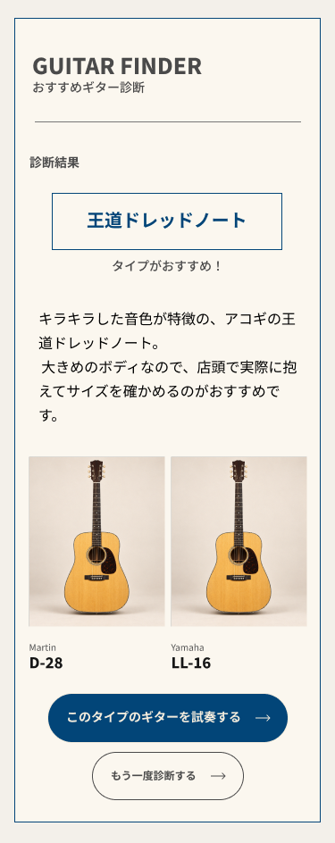
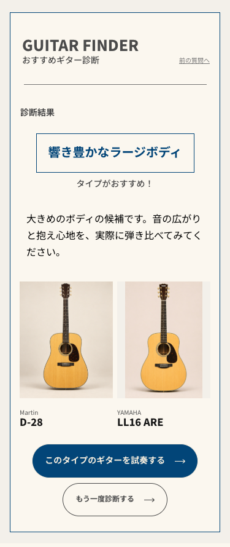

左がFigma、右が実装。結果は「力強い／大きめ／どちらも好き・まだわからない」です。タイプ名・説明文は承認済みの共通特性による文言、商品画像・表記は実マスターを使用しています。そのため、説明の長さに応じて結果の高さが変わります。「前の質問へ」は承認済みの補完UIです。










PC q1 / PC q2 / PC result-compact / PC result-allround / SP q1 / SP q2 / SP result-compact / SP result-allround